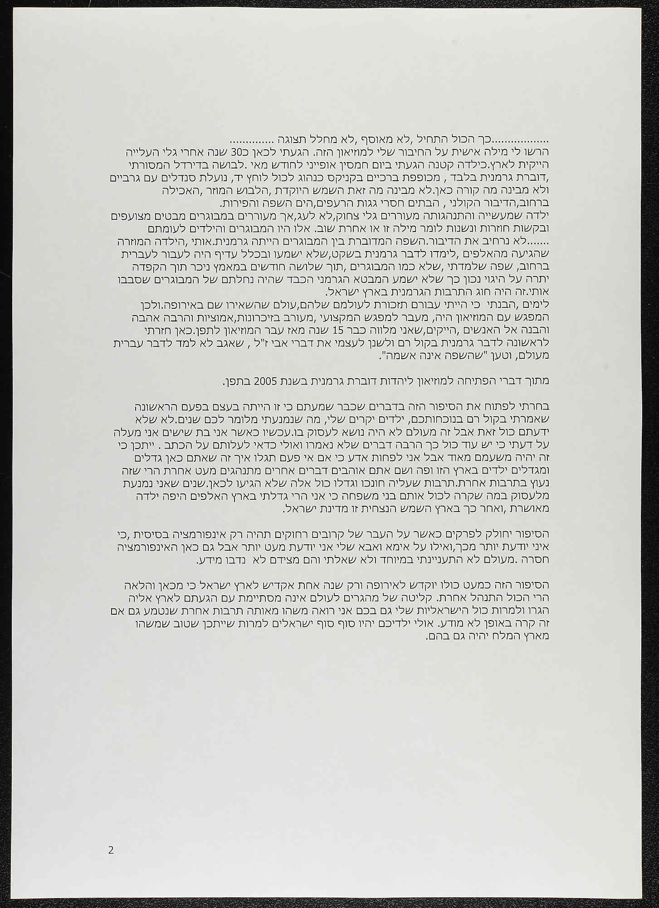

הרשו לי מילה אישית על החיבור שלי למוזיאון הזה. הגעתי לכאן כ-30 שנה אחרי גלי העלייה הייקית לארץ. כילדה קטנה הגעתי ביום חמסין אופייני לחודש מאי. לבושה בדירדל המסורתי, דוברת גרמנית בלבד, מכופפת ברכיים בקניקס כנהוג לכל לוחץ יד, נועלת סנדלים עם גרביים ולא מבינה מה קורה כאן. לא מבינה מה זאת השמש היוקדת, הלבוש המוזר, האכילה ברחוב, הדיבור הקולני, הבתים חסרי גגות הרעפים, הים, השפה והפירות.
ילדה שמעשייה והתנהגותה מעוררים גלי צחוק, לא לעג, אך מעוררים במבוגרים מבטים מצועפים ובקשות חוזרות ונשנות לומר מילה זו או אחרת שוב. אלו היו המבוגרים והילדים לעומתם ... לא נרחיב את הדיבור. השפה המדוברת בין המבוגרים הייתה גרמנית. אותי, הילדה המוזרה שהגיעה מהאלפים, לימדו לדבר גרמנית בשקט, שלא ישמעו, ובכלל עדיף היה לעבור לעברית ברחוב.
לימים הבנתי כי הייתי עבורם תזכורת לעולמם שלהם, עולם שהשאירו שם באירופה. ולכן המפגש עם המוזיאון היה, מעבר למפגש המקצועי, מעורב בזכרונות, אמוציות והרבה אהבה והבנה אל האנשים, הייקים, שאני מלווה כבר 15 שנה מאז עבר המוזיאון לתפן. כאן חזרתי לראשונה לדבר גרמנית בקול רם ולשנן לעצמי את דברי אבי ז"ל, שאגב לא למד לדבר עברית מעולם, וטען "שהשפה אינה אשמה״.
מתוך דברי הפתיחה למוזיאון ליהדות דוברת גרמנית בשנת 2005 בתפן.
